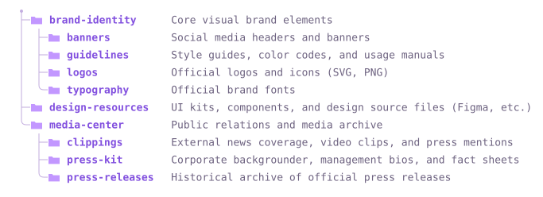

Everything to drop treegen into a repo — markers, options, the three styles, SVG colours, HTML output, and publishing.
1 — Drop a placeholder anywhere in your README.md:
## Project structure [[files]]
2 — Add a workflow at .github/workflows/update-tree.yml:
name: Update file tree
on:
push:
branches: [main]
permissions:
contents: write
jobs:
update:
runs-on: ubuntu-latest
steps:
- uses: actions/checkout@v4
- uses: lucianofedericopereira/treegen@v1
with:
style: ascii # ascii | svg | collapsible
<!-- filetree:start dir="src" style="svg" --> <!-- filetree:end -->
Two ways to mark where a tree goes:
[[files]],
optionally with attributes. On first run it expands into a managed block.<!-- filetree:start … --> /
<!-- filetree:end --> pair. Everything between
is regenerated every run; the start line's attributes are preserved.Attributes live on the marker, so one file can render many directories:
[[files dir="server" style="ascii"]] [[files dir="web/src" style="svg" color="green"]] [[files dir="deploy" style="collapsible" max-depth="2"]]
[[…]] tokens inside
fenced code blocks or `inline code` are left untouched — so you
can document the syntax in the very same file it edits.
All rendered live from
examples/brand by treegen.
# notes├── brand-identity/ # Core visual brand elements │ ├── banners/ # Social media headers and banners │ ├── guidelines/ # Style guides, color codes, and usage manuals │ ├── logos/ # Official logos and icons (SVG, PNG) │ └── typography/ # Official brand fonts ├── design-resources/ # UI kits, components, and design source files (Figma, etc.) └── media-center/ # Public relations and media archive ├── clippings/ # External news coverage, video clips, and press mentions ├── press-kit/ # Corporate backgrounder, management bios, and fact sheets └── press-releases/ # Historical archive of official press releases
<details>
The svg style takes a color,
macOS-label style. The default github matches GitHub's own
folder colour (Primer blue) and is theme-aware. Each ships a light and dark variant.
<!-- filetree:start dir="src" style="svg" color="purple" --> <!-- filetree:end -->

Any marker overrides the workflow defaults inline.
| Attribute | Example | Meaning |
|---|---|---|
dir | dir="src" | Directory to scan (repo-root relative). |
style | style="svg" | ascii, svg, or collapsible. |
color | color="green" | SVG folder colour (see palette above). |
max-depth | max-depth="2" | Limit depth (0 = unlimited). |
dirs-only | dirs-only="true" | Directories only, hide files. |
exclude | exclude="dist,*.tmp" | Extra ignore patterns (.gitignore syntax). |
use-gitignore | use-gitignore="false" | Respect the repo's root .gitignore. |
show-root | show-root="true" | Include the scanned directory itself. |
descriptions | desc="tree.json" | JSON of path → comment notes. |
svg-output | svg="docs/t.svg" | Where the SVG file is written. |
collapse | collapse="true" | Wrap the block in one top-level <details>. |
open | open="false" | Render collapsibles closed. |
| Input | Default | Description |
|---|---|---|
readme | README.md | File(s) to update. Comma/newline separated, globs. |
style | ascii | Default style. |
color | github | Default SVG folder colour. |
format | auto | auto | markdown | html. |
expand-placeholders | true | Set false for HTML pages documenting [[…]]. |
check | false | Fail if out of date; never writes. |
commit | true | Commit & push the changes. |
python-version | 3.11 | Python used to run the tool. |
Output: changed — 'true' if anything was updated.
On .html files (or with format: html) the same
markers emit styled HTML — a <pre>, an
<img>, or a <details> tree. This very
page is built that way.
python -m treegen --readme index.html --format html --no-placeholder
--format html (or auto) emits HTML.--no-placeholder regenerates only explicit markers, leaving literal
[[files]] docs alone.Fail a pull request when the README is stale instead of committing:
- uses: lucianofedericopereira/treegen@v1
with:
check: "true"
commit: "false"
Ship index.html + .nojekyll, then
Settings → Pages → Deploy from a branch → main / / (root).
Push public, create a release tagged v1.0.0, tick
“Publish this Action to the Marketplace”, then float a v1 tag:
git tag -fa v1 -m "treegen v1" && git push origin v1 --force
Standard library only — nothing to install.
python -m treegen --readme README.md --style svg --color green --dir src python -m treegen --readme README.md --check # preview, don't write
Run python -m treegen --help for every flag.